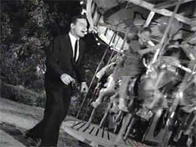

The Twilight Zone is one of my favorite shows. It was created by Rod Serling. It is cerebral, perceptive & well-written. Unlike the hot garbage of today’s TV shows, it was and is the intellectual counterweight to vapidity in TV media.
One of my favorite episodes – second to the whimsical episode “The Hunt” – is the episode “Walking Distance.” You can watch the episode online here. Well-written, excellent acting and a beautiful score really bring this tale together. It is about a 36 year-old executive named Martin Sloan. Burnt out from the rat-race of the corporate world, he seeks to return to the idyllic world of his childhood.
One day, while driving in the country, disgruntled & frustrated, his car breaks down and while stopping to have it fixed, he wanders to the local town and finds out it is very much like his hometown. In fact, he discovers he has time-traveled to his past in his hometown.
Martin wanders around in a state of child-like wonder, revisiting his past with eyes wide-open. The people of his past regard him with suspicion. He cannot connect with his former self as a child and his parents refuse to believe his story that he is their child from the future. He comes across as insane.

The climax is when Martin confronts his former self on a carousel ride. He pursues his former self so badly that he falls off the ride, permanently disabling his leg. Martin immediately notices he has limp now, too. His father confronts him, telling him it is inappropriate to bother his former self. It is his summer, his life. You had your chance to enjoy your childhood, now let him. He suggests that nostalgia isn’t what he needs – he needs to focus on his future & search for happiness in the present.
The episode ends with a beautiful soliloquy by Rod Serling:
Martin Sloan, age thirty-six, vice-president in charge of media. Successful in most things but not in the one effort that all men try at some time in their lives—trying to go home again. And also like all men perhaps there’ll be an occasion, maybe a summer night sometime, when he’ll look up from what he’s doing and listen to the distant music of a calliope, and hear the voices and the laughter of the people and places of his past. And perhaps across his mind there’ll flit a little errant wish, that a man might not have to become old, never outgrow the parks and the merry-go-rounds of his youth. And he’ll smile then too because he’ll know it is just an errant wish, some wisp of memory not too important really, some laughing ghosts that cross a man’s mind, that are a part of the Twilight Zone.
When re-watching the episode, the episode has a kind-of dreamlike, off-kilter feel to it, like Kanye’s song “I Wonder.” It is extremely personal & might be one of the most honest episodes Serling wrote. Two themes present themselves: The soul-crushing pressure of the modern workplace and the nostalgia for youth lost.
The modern workplace is even more fraught with pressure than the 1950’s. With females now subjecting the workplace to their issues and bullshit it is even more a minefield for the average man. Longer hours, less pay and more bullshit sliding down from corporate heads. More senseless government intervention that results in people having to do mindless, soul-crushing work to slake the thirst of some bureaucratic drone.
For men, the pressures of the sexual marketplace, student loans and politically correct society do nothing to alleviate the pressure of modern society. Problems of self-delusion, obsession with video games and drug abuse make sense on some level. Not healthy, but are ways of coping with the untoward demands of society. Coupled with poor socialization of boys that leads them to be simps, men are lonelier than ever.
Which feeds into nostalgia. Like Martin, some men think that if they could just return to their youth or the past historically. The problem with that is the past is just that – the past. It belongs to someone else. Martin’s dogged insistence on getting attention in the past speaks to his loneliness & disillusionment with the present. His father recognizes this and advises him to search out for happiness in his life – it is out there if you so wish to pursue it.
Nostalgia, here, is a form of not dealing with your problems in life head-on. We all get it from time to time, but the healthiest thing to do is cherish your memories while actively seeking to better your reality. Martin, here, has to learn a very tough lesson, as he crippled himself before he came to terms with this lesson.
![[Image: walking.jpg]](http://blogs.amctv.com/scifi-scanner/images/walking.jpg)
In a way, it is selfish and narcissistic. Unable to comprehend, at first, that this particular summer he is idolizing isn’t his reality anymore, it takes actively hurting someone – who is himself in the past – before he realized his error.
Disillusionment with reality is nothing new. However, what defines you is how you deal with it. Do you take it head-on and actively make your life better? Or do you sink into depression, medicating yourself with drugs & pornography? Like in American Beauty, the character of Lester was partially upset at himself because he was such a huge pussy for most of his life. He wasn’t a man, but a person who got life dictated to him, by his job, by his wife and even his daughter.
While I can only speculate as to Martin’s home life, it is clear he feels put upon by his professional life. However, he learns that is up to him to make his life better and not pine away for a past that is long gone.
Which is the point of the episode. You may have treasured memories in your past, but you have to treat them as such – history. I have serious blue-pill friends in my life, but I have distanced myself from them because I am bettering myself and their naivete and immaturity doesn’t rub me the right way.
It is sad as you never want to see friends leave, but sometimes it is necessary. That is a part of life which Martin exemplifies. Learning that he has to make changes in his life so he can enjoy life, he leaves a better man. His wistful smile at the shows that he realizes his nostalgia is just an errant wish, a laughing ghost that reminds him he has had good memories in his life. The smile also shows he understand that his past is in the past. It doesn’t do him any good to pine away for that – healthy men actively seek to better their lives in the present.
Read Next: The HGTV Channel Poisons Female Minds